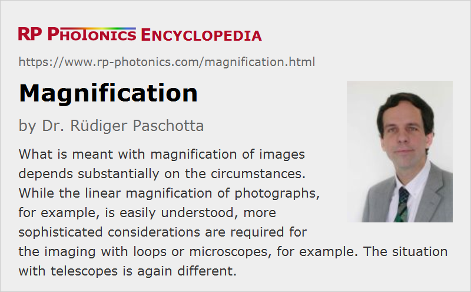

Magnification
Definition: the enlargements of images
Alternative term: power
German: Vergrößerung
Categories: general optics, vision, displays and imaging
Formula symbol: M, MA
How to cite the article; suggest additional literature
Author: Dr. Rüdiger Paschotta
In the context of optical imaging, the term magnification generally means that the size of a displayed or directly observed image is increased (or more generally, that it is modified). However, it depends on the circumstances what in detail that means.
Generally, one distinguishes between linear magnification (also transverse or lateral magnification) M, which relates to dimensions of some images, and angular magnification MA, where viewing angles are considered. For a telescope, understood as an afocal system, the angular magnification factor is the inverse of the linear magnification factor (assuming equal refractive indices on both sides of the optics).
Further, one can define the longitudinal magnification, which tells how much the image position changes (differentially) for changes of the object position.
The term amplification is not only used for the phenomenon as large, but frequently also as a short form for amplification factor.
Sometimes, the term power is used instead of magnification e.g. of a telescope.
In case of magnification factors smaller than unity, the term demagnification is often used.
Magnification of Photographs
Photography can involve two or more imaging steps. In a first step, some objects are imaged to a photographic film or an image sensor, for example. In most cases, those images are smaller than the objects; we have a magnification below unity.
In a second step, enlarged images can be produced – for example, one can produce images of postcard size from smaller film negatives, applying some magnification about unity. With larger magnification, one can make posters. Also, one may produce slide positives and project them to a large screen, or display digital images on large screens.
In all those cases, one is dealing with linear magnification.
See also the article on imaging with a lens.
Magnification of a Telescope
The situation with an optical telescope for direct viewing is profoundly different. The objects are usually placed at a large distance from the telescope objective, and the light coming from different objects to the telescope is essentially distinguished via slightly different angular propagation directions. In geometrical optics, we are dealing with light rays having slightly different angular directions. In the basic configuration of a telescope, parallel incoming rays are converted into parallel rays at the output of the ocular lens (eyepiece), and only in the optical system of the observing eye they are focused to the retina, where one would ideally obtain one image point for each angular direction.
One can see that the essential optical function of the telescope is to provide some angular magnification, so that effectively the image on the retina will be enlarged compared with direct viewing (without the telescope).
See the article on telescopes for more details, for example the contributions of objective and ocular lens to the magnification.
Magnification of a Loupe or a Magnifying Glass
The magnification of a loupe is somewhat more difficult to analyze. Here, we cannot simply compare linear dimensions or angular separations between the input and output. One needs to consider the system consisting of the loupe and the human eye, and compare that to the human eye alone. In the latter case, one assumes a standard distance of 250 mm, to which the healthy eye can easily accommodate in order to resolve details most accurately. The obtained magnification then depends on whether during use of the loupe the eye is relaxed (focused to infinite distance) or focused to a smaller distance; in the latter case, the spacing between eye and loupe is also relevant, and a somewhat larger magnification can be achieved.
For magnifying glasses, which are typically held in a larger distance from the eye and have a larger focal length, the situation is again somewhat different.
See the articles on loupes and magnifying glasses for more details.
Magnification of a Microscope
The magnification of a microscope is determined in a similar way as for the loupe. Essentially, one compares the perceived image size between two situations: for observation through the microscope and for direct viewing without that instrument – in the latter case, again in a standard distance of 250 mm. The resulting magnifications are normally between 20 and 1000.
Useful and Empty Magnification
In principle, arbitrary amounts of image amplification could be achieved e.g. by cascading magnifying optical instruments. However, magnification is only useful to some extent. For example, consider the use of a microscope:
- The microscope's magnification is considered as useful (or usable) as long as it allows one to see more details of objects. In a situation where the achieved resolution is still limited by the resolution of the observing eye, a higher magnification would still be useful.
- Beyond that point, however, magnification becomes “empty”: although the obtained images get larger, they do not resolve more details, because the resolution is limited by diffraction or by imperfections of the optical instrument, for example.
The same situation is encountered when viewing digital images on a screen. Once an image is displayed in a size where each image pixel corresponds to at least one screen pixel, the whole available image information is displayed. Further increases of magnification may only be useful if the observer has difficulties resolving the screen pixels.
Questions and Comments from Users
Here you can submit questions and comments. As far as they get accepted by the author, they will appear above this paragraph together with the author’s answer. The author will decide on acceptance based on certain criteria. Essentially, the issue must be of sufficiently broad interest.
Please do not enter personal data here; we would otherwise delete it soon. (See also our privacy declaration.) If you wish to receive personal feedback or consultancy from the author, please contact him e.g. via e-mail.
By submitting the information, you give your consent to the potential publication of your inputs on our website according to our rules. (If you later retract your consent, we will delete those inputs.) As your inputs are first reviewed by the author, they may be published with some delay.
See also: imaging, telescopes, microscopes, magnifying glasses, loupes
and other articles in the categories general optics, vision, displays and imaging
|  |
If you like this page, please share the link with your friends and colleagues, e.g. via social media:
These sharing buttons are implemented in a privacy-friendly way!